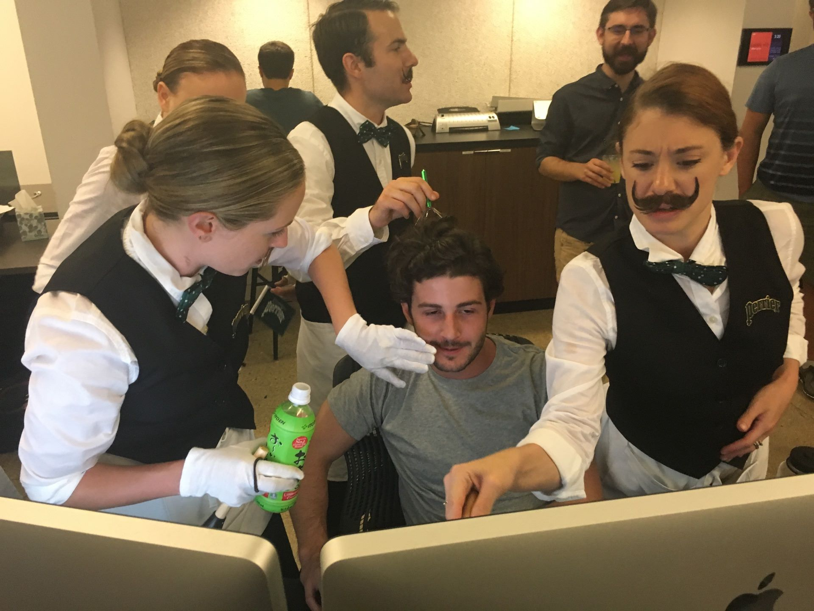

Colton Brown
is a New York based developer
currently building things at for good measure.
Previously, he freelanced
as a UX designer and developer, worked as a software engineer,
and went to college.
He’s interested in shaping the future of technology through art and design.
text or email him to get in touch,
or leave a message here.
